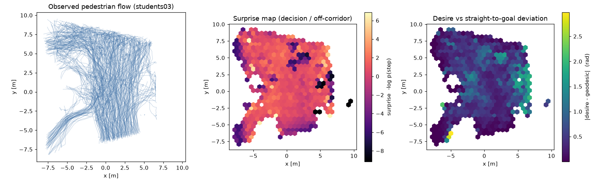
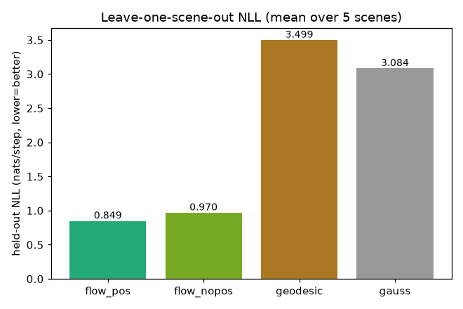
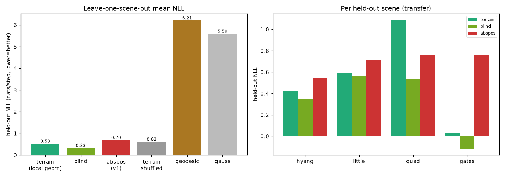
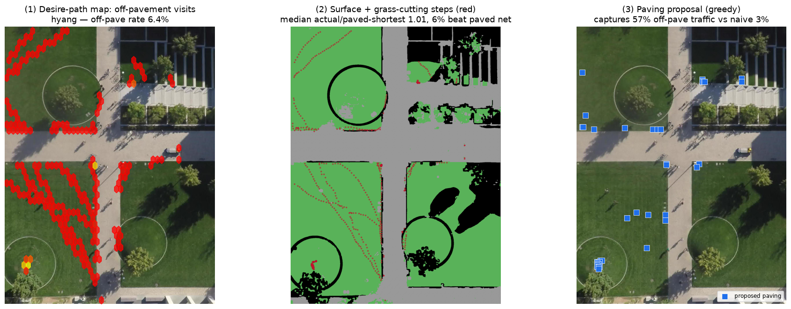

屋外の自由歩行（ETH/UCY）の一歩 p(d_forward, d_lateral | 文脈) を条件付き
Normalizing Flow で学習。正確な尤度で、混雑コリドー・迷いの場所・「まっすぐ目的地」からの系統的なズレ＝
けもの道(desire path)の芽を数値化する。KAN-NF 空間動線シリーズの第1弾。
芯となる問い：人の動線は「与えられた構造(舗装・障害物・出入口)」に従いつつ、 “本当はこう歩きたい”という望まれた構造を漏らす。条件付き Flow の尤度は、その desire(実際の流れ) と provided(まっすぐ目的地への測地線) の差を測る物差しになる。 このズレが大きい場所こそ、環境が流れを曲げている＝けもの道の候補。
データ：ETH/UCY 歩行者軌跡5シーン(seq_eth, seq_hotel, zara01, zara02, students03、
OpenTraj 経由の obsmat)。各歩行者の平面座標 (x,y) を
自己中心の一歩増分 (d_forward, d_lateral) に整形。正直な範囲：ETH/UCY には舗装マップの正解が無いため、
provided は「目的地への直進」で代用し、desire path は測地線からの系統的偏差の代理として示す（実舗装との照合は SDD 等が要る）。
モデル：(d_forward, d_lateral) の zuko 条件付き Neural Spline Flow。文脈は
直近8ステップの増分を要約する GRU ＋ (正規化位置・目的地方位の sin/cos・残距離・シーン埋め込み) の MLP。
motionsim / MERL-NF と同じ実装様式。
| モデル | held-out NLL (nats/step, 小さいほど良い) | 意味 |
|---|---|---|
| NF（位置条件つき） | 0.85 ✓ 最良 | 位置＝コリドー構造を使うと最も当たる |
| NF（位置ブラインド） | 0.97 | 位置を隠すと悪化＝構造が効いている証拠 |
| 直進ガウス(測地線) | 3.50 | 「まっすぐ目的地」だけでは説明できない |
| 無条件ガウス | 3.08 | 素朴基線 |
読み：位置を条件に入れた NF の NLL は全基線より低く（当てはまりが良く）、位置を隠すと悪化する。
これは「歩行の一歩が、その場の空間構造に依存して曲がる」＝環境が流れを形作っていることを示す。
直進基線との差(平均 −2.4 nats)が、まさに desire ≠ provided の大きさ。
正直な例外：小シーン hotel だけは位置ブラインドの NLL が低かった（ブラインド0.77 < 位置条件2.14）。
学習4シーンと配置が大きく異なり位置条件が過適合した1件で、シーン数が少ない LOSO の限界も示す。

−log p＝一歩が読みにくい場所（分岐・コリドー外＝迷いの場所）。
右：desire と「直進目的地」の偏差 |desire − geodesic|。青が小・黄が大で、
環境が流れを曲げている領域＝けもの道が生まれうる場所を指す。
5シーンを1つずつ held-out にした平均 NLL。位置条件つき NF＜位置ブラインド＜直進＜ガウス。 未知シーンへ汎化した状態でも構造条件が効く。
v1 は ETH/UCY で舗装マップの正解が無く、provided を「目的地への直進」で代用していた（弱点①）。また絶対位置を丸暗記して未知シーンで崩れた（弱点②）。 v2 は俯瞰＋歩ける面の正解を持つ Stanford Drone Dataset（4シーン hyang/little/quad/gates）に載せ替え、 入力を絶対位置 → 進行方向で整列した局所地形パッチ（舗装/障害物/距離場の 3ch CNN）に変えて、 「地形を条件にすると未知シーンへ転移するか」を Leave-One-Scene-Out で直接検定した。 歩ける面マスクは reference.jpg から色＋テクスチャで自動生成（手アノテほぼ不要／ped-on-walkable 87–100% で軌跡と整合）。
| held-out シーン | terrain (局所地形) | blind (目的地+履歴+群集) | abspos (v1・絶対位置) | terrain-shuffled (地形の中身を破壊) |
|---|---|---|---|---|
| hyang | 0.42 | 0.35 | 0.55 | 0.28 |
| little | 0.59 | 0.56 | 0.71 | 0.57 |
| quad | 1.09 | 0.54 | 0.76 | 1.08 |
| gates | 0.03 | −0.12 | 0.76 | 0.54 |
| 平均 | 0.53 | 0.33 | 0.70 | 0.62 |
読み（held-out NLL, 小さいほど良い。8歩先到達位置ターゲット）：
局所地形(terrain)は blind に 0/4折 で勝てず、地形パッチの中身を壊した対照(terrain-shuffled)ともほぼ同じ＝
地形の情報は使われていない（次の一歩でも同じ結論。図 metrics_v2.png）。
一方 abspos（v1式の絶対位置）は一貫して最悪で、絶対位置は未知シーンへ転移しないという v1 弱点②は再確認された。
最も転移するのは目的地志向の運動そのもの（blind）。これは Layout-NF の教訓＝「運動フローはレイアウトに鈍感」の屋外での再現で、
"けもの道"は次の動きの予測としては現れない。負の結果として正直に記録する。

予測モデルの勝敗とは独立に、実軌跡 × 実舗装マスクから「人が系統的に舗装を外れて芝を突っ切る場所」を直接可視化できる。これが desire path の本体。

読み（hyang）：歩行ステップの 約6%が舗装外（芝）で、6%の歩行者は舗装ネットワークの最短路より短く芝を突っ切って目的地に達する（実経路/舗装内最短 中央値1.01）。 提案した40セルの舗装はオフ舗装交通の57%を捕捉（同数のセルをランダムに置く素朴案は3%）＝「引き直すべき園路」を交通量から逆算できる。 シーン別のオフ舗装率：hyang 5.9% / gates 2.9% / little 2.1% / quad 0.0%（全面舗装の広場で芝の近道が起きない、という地形と整合）。
コード: desirepath/{prep_sdd,data_v2,pipeline_v2,readouts_v2}.py, run_all_v2.py。
データ: SDD（歩行者軌跡＋自動生成の歩ける面マスク）。指標: metrics_v2.json / readouts_v2.json。
3つの使い方＝①サプライズ地図 ②what-if ③逆設計のうち、v2 は SDD の実舗装マップ上で③逆設計（舗装提案）を記述的に達成した。 一方で「局所地形を条件にすれば予測が未知シーンへ転移する」という仮説は成立しなかった（正直な負の結果）—— 運動予測としてのけもの道は現れず、最も転移するのは目的地志向の運動だった。 けもの道は予測ではなく記述（実軌跡の系統的オフ舗装偏差）として捉えるのが正しい、というのが v2 の学び。
次の攻め筋は Layout-NF で唯一効いた定式化＝静的占有 p(訪問位置 | 地形)（運動を捨て「どこに居るか」を地形で条件化）。②what-if（舗装を変えて流れを再生成）はその上に載る。
v1 データ: ETH/UCY (OpenTraj)、uv run python run_all.py。
v2 データ: SDD（flclain/StanfordDroneDataset）、uv run python -m desirepath.prep_sdd → run_all_v2.py → python -m desirepath.readouts_v2。
KAN-NF 実験群の一部（統括）。